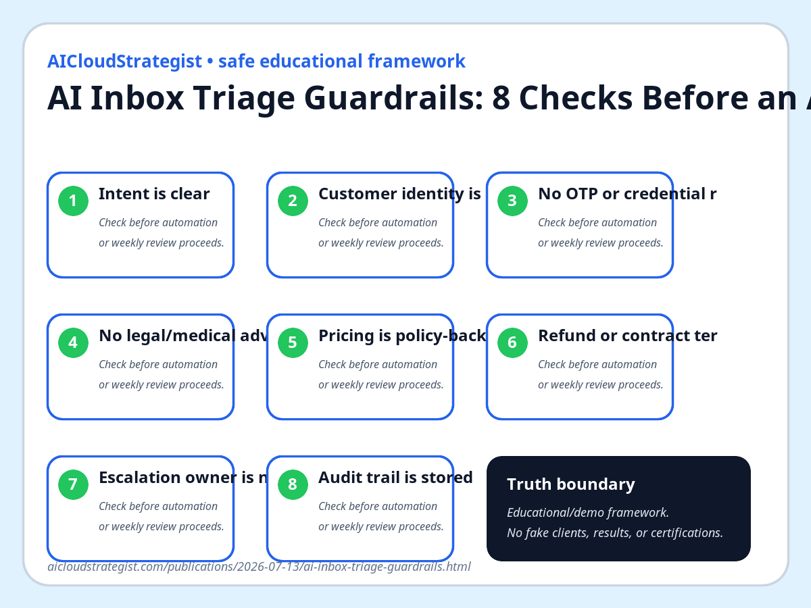

AI Inbox Triage Guardrails: 8 Checks Before an Agent Replies
The fastest AI reply is not always the safest reply. Put a triage layer in front of customer-facing agents so routine messages move quickly and risky messages pause for a human.

Practical checklist
- Intent is clear
- Customer identity is known
- No OTP or credential request
- No legal/medical advice needed
- Pricing is policy-backed
- Refund or contract terms are not improvised
- Escalation owner is named
- Audit trail is stored
AI inbox automation should start with routing, not full autonomy. A safe first version separates routine, factual replies from messages that need approval.
Use the guardrails below before an agent replies to a customer: intent clarity, identity context, credential safety, regulated-advice risk, pricing source, contract/refund boundary, escalation owner, and audit trail.
Truth boundary: this is an educational operating checklist. It is not a claim about client results, legal compliance, or certified security status.
AICloudStrategist publishes safe educational frameworks only: no fabricated clients, testimonials, certifications, rankings, or outcome claims.
Want this converted into an operating workflow?
This educational post is not a client result or compliance claim. If the topic fits your business, request a bounded AICS review and we will map the evidence, owners and next safe steps before proposing any paid work.